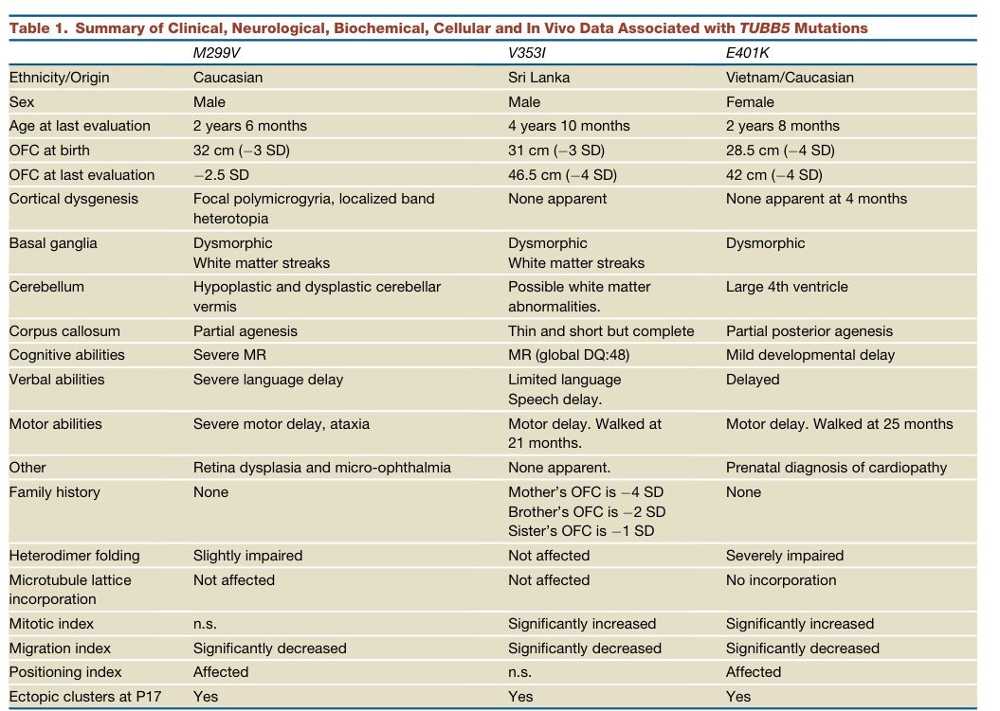

Question: You are an expert researcher providing comprehensive, well-cited information.
Provide detailed information focusing on: 1. Key concepts and definitions with current understanding 2. Recent developments and latest research (prioritize 2023-2024 sources) 3. Current applications and real-world implementations 4. Expert opinions and analysis from authoritative sources 5. Relevant statistics and data from recent studies
Format as a comprehensive research report with proper citations. Include URLs and publication dates where available. Always prioritize recent, authoritative sources and provide specific citations for all major claims.
Disease Characteristics Research Template
Target Disease
- Disease Name: TUBB/TUBB5-related Microcephaly
- MONDO ID: (if available)
- Category: Mendelian
Research Objectives
Please provide a comprehensive research report on TUBB/TUBB5-related Microcephaly covering all of the disease characteristics listed below. This report will be used to populate a disease knowledge base entry. Be thorough and cite primary literature (PMID preferred) for all claims.
For each section, suggested databases/resources are listed. These are the first places you should search for information on each topic.
1. Disease Information
Search first: OMIM, Orphanet, ICD-10/ICD-11, MeSH, PubMed
- What is the disease? Provide a concise overview.
- What are the key identifiers? (OMIM, Orphanet, ICD-10/ICD-11, MeSH, Mondo)
- What are the common synonyms and alternative names?
- Is the information derived from individual patients (e.g., EHR) or aggregated disease-level resources?
2. Etiology
- Disease Causal Factors: What are the primary causes? (genetic, environmental, infectious, mechanistic)
- Risk Factors:
Search first: PubMed, Cochrane Library, UpToDate, clinical guidelines, ClinVar, ClinGen, GWAS Catalog, PheGenI, CTD, CDC, WHO, epidemiological databases
- Genetic risk factors (causal variants, susceptibility loci, modifier genes)
- Environmental risk factors (toxins, lifestyle, occupational exposures, age, sex, family history)
- Protective Factors:
Search first: PubMed, Cochrane Library, clinical trial databases, GWAS Catalog, gnomAD, WHO, CDC, nutrition databases
- Genetic protective factors (protective variants, modifier alleles)
- Environmental protective factors (diet, lifestyle, exposures that reduce risk)
- Gene-Environment Interactions: How do genetic and environmental factors interact to influence disease?
Search first: CTD, PubMed, PheGenI, GxE databases
3. Phenotypes
Search first: HPO (Human Phenotype Ontology), OMIM, Orphanet, PubMed, clinicaltrials.gov, MedDRA, SNOMED CT, DECIPHER, LOINC
For each phenotype, provide: - Phenotype type: symptoms, clinical signs, physical manifestations, behavioral changes, or laboratory abnormalities
For symptoms/signs: HPO, OMIM, Orphanet, PubMed For behavioral changes: HPO, DSM, RDoC (Research Domain Criteria), PubMed For laboratory abnormalities: LOINC, SNOMED CT, LabTests Online, PubMed - Phenotype characteristics: Search first: OMIM, Orphanet, HPO, PubMed - Age of symptom onset (neonatal, childhood, adult-onset, late-onset) - Symptom severity (mild, moderate, severe, variable) - Symptom progression (stable, progressive, episodic, fluctuating) - Frequency among affected individuals (percentage or qualitative) - Quality of life impact: Effects on daily functioning and well-being (per-phenotype when possible) Search first: EQ-5D database, SF-36, WHO QOL databases, PubMed - Suggest HPO (Human Phenotype Ontology) terms for each phenotype
4. Genetic/Molecular Information
- Causal Genes: Gene mutations or chromosomal abnormalities responsible for disease (gene symbols, OMIM IDs)
Search first: OMIM, ClinVar, HGMD, Ensembl, NCBI Gene
- Pathogenic Variants:
- Affected genes (gene symbols, HGNC IDs) > Search first: OMIM, NCBI Gene, Ensembl, HGNC, UniProt, GeneCards
- Variant classification (pathogenic, likely pathogenic, VUS per ACMG/AMP guidelines) > Search first: ClinVar, ClinGen, ACMG/AMP guidelines, VarSome
- Variant type/class (missense, frameshift, nonsense, splice-site, structural)
- Allele frequency in population databases > Search first: gnomAD, 1000 Genomes, ExAC, TOPMed, dbSNP
- Somatic vs germline origin > Search first: COSMIC (somatic), ClinVar, ICGC, TCGA
- Functional consequences (loss of function, gain of function, dominant negative)
- Modifier Genes: Genes that modify disease severity or expression
- Epigenetic Information: DNA methylation, histone modifications, chromatin changes affecting disease
Search first: ENCODE, Roadmap Epigenomics, MethBase, DiseaseMeth
- Chromosomal Abnormalities: Large-scale genetic changes (aneuploidy, translocations, inversions)
Search first: DECIPHER, ClinVar, ECARUCA, UCSC Genome Browser
5. Environmental Information
- Environmental Factors: Non-genetic contributing factors (toxins, radiation, pollution, occupational exposure)
Search first: CTD (Comparative Toxicogenomics Database), TOXNET, PubMed, EPA databases
- Lifestyle Factors: Behavioral factors (smoking, diet, exercise, alcohol consumption)
Search first: CDC databases, WHO, PubMed, NHANES
- Infectious Agents: If applicable, pathogens causing or triggering disease (bacteria, viruses, fungi, parasites)
Search first: NCBI Taxonomy, ViPR, BV-BRC, MicrobeDB, GIDEON
6. Mechanism / Pathophysiology
- Molecular Pathways: Specific signaling cascades or biochemical pathways involved (Wnt, MAPK, mTOR, PI3K-AKT, etc.)
Search first: KEGG, Reactome, WikiPathways, PathBank, BioCyc
- Cellular Processes: Cell-level mechanisms (apoptosis, autophagy, cell cycle dysregulation, inflammation, etc.)
Search first: Gene Ontology (GO), Reactome, KEGG, PubMed
- Protein Dysfunction: How protein structure or function is altered (misfolding, aggregation, loss of function, gain of function)
Search first: UniProt, PDB (Protein Data Bank), InterPro, Pfam, AlphaFold
- Metabolic Changes: Alterations in metabolic processes (energy metabolism, lipid metabolism, amino acid metabolism)
Search first: KEGG, BioCyc, HMDB (Human Metabolome Database), BRENDA
- Immune System Involvement: Role of immune response (autoimmunity, immunodeficiency, chronic inflammation)
Search first: ImmPort, Immunome Database, IEDB, Gene Ontology
- Tissue Damage Mechanisms: How tissues/ are injured (oxidative stress, ischemia, fibrosis, necrosis)
Search first: PubMed, Gene Ontology, Reactome
- Biochemical Abnormalities: Specific molecular defects (enzyme deficiencies, receptor dysfunction, ion channel defects)
Search first: BRENDA, UniProt, KEGG, OMIM, PubMed
- Epigenetic Changes: DNA methylation, histone modifications affecting gene expression in disease
Search first: ENCODE, Roadmap Epigenomics, MethBase, DiseaseMeth
- Molecular Profiling (if available):
- Transcriptomics/gene expression changes > Search first: GEO (Gene Expression Omnibus), ArrayExpress, GTEx, Human Cell Atlas, SRA
- Proteomics findings > Search first: PRIDE, ProteomeXchange, Human Protein Atlas, STRING, BioGRID
- Metabolomics signatures > Search first: MetaboLights, Metabolomics Workbench, HMDB, METLIN
- Lipidomics alterations > Search first: LIPID MAPS, SwissLipids, LipidHome, Metabolomics Workbench
- Genomic structural features > Search first: UCSC Genome Browser, Ensembl, NCBI, dbVar, DGV
- Advanced Technologies (if applicable):
- Single-cell analysis findings (cell-type specific mechanisms, cellular heterogeneity) > Search first: Human Cell Atlas, Single Cell Portal, GEO, CELLxGENE
- Spatial transcriptomics findings > Search first: GEO, Spatial Research, Vizgen, 10x Genomics data
- Multi-omics integration results > Search first: TCGA, ICGC, cBioPortal, LinkedOmics, PubMed
- Functional genomics screens (CRISPR, RNAi) > Search first: DepMap, GenomeRNAi, PubMed, BioGRID ORCS
For each mechanism, describe: - The causal chain from initial trigger to clinical manifestation - Which mechanisms are upstream vs downstream - What cell types and biological processes are involved - Suggest GO terms for biological processes and CL terms for cell types
7. Anatomical Structures Affected
- Organ Level:
- Primary organs directly affected
- Secondary organ involvement (complications, secondary effects)
- Body systems involved (cardiovascular, nervous, digestive, respiratory, endocrine, etc.)
Search first: Uberon, FMA (Foundational Model of Anatomy), OMIM, HPO, ICD-11, MeSH, SNOMED CT
- Tissue and Cell Level:
- Specific tissue types affected (epithelial, connective, muscle, nervous)
- Specific cell populations targeted (with Cell Ontology terms)
Search first: Uberon, Human Protein Atlas, Cell Ontology, Human Cell Atlas, CellMarker, PanglaoDB
- Subcellular Level:
- Cellular compartments involved (mitochondria, nucleus, ER, lysosomes) (with GO Cellular Component terms)
Search first: Gene Ontology (Cellular Component), UniProt, Human Protein Atlas
- Localization:
- Specific anatomical sites (with UBERON terms) > Search first: FMA, Uberon, NeuroNames (for brain), SNOMED CT
- Lateralization (unilateral, bilateral, asymmetric) > Search first: HPO, clinical literature, imaging databases
8. Temporal Development
- Onset:
- Typical age of onset (congenital, pediatric, adult, geriatric)
- Onset pattern (acute, subacute, chronic, insidious)
Search first: OMIM, Orphanet, HPO, PubMed
- Progression:
- Disease stages (early, intermediate, advanced, end-stage) > Search first: Cancer Staging Manual (AJCC), WHO classifications, PubMed
- Progression rate (rapid, slow, variable)
- Disease course pattern (episodic, relapsing-remitting, progressive, stable)
- Disease duration (self-limited, chronic lifelong)
Search first: Disease registries, longitudinal cohort databases, natural history studies, PubMed, Orphanet, OMIM
- Patterns:
- Remission patterns (spontaneous, treatment-induced) > Search first: Clinical trial databases, disease registries, PubMed
- Critical periods (time windows of vulnerability or opportunity for intervention) > Search first: PubMed, developmental biology databases, clinical guidelines
9. Inheritance and Population
- Epidemiology:
- Prevalence (cases per 100,000 at given time)
- Incidence (new cases per 100,000 per year)
Search first: Orphanet, CDC, WHO, GBD (Global Burden of Disease), national registries, SEER, disease registries
- For Genetic Etiology:
- Inheritance pattern (AD, AR, X-linked, mitochondrial, multifactorial, polygenic) > Search first: OMIM, Orphanet, ClinVar, GTR (Genetic Testing Registry)
- Penetrance (complete, incomplete, age-dependent) > Search first: ClinVar, OMIM, PubMed, ClinGen
- Expressivity (variable, consistent) > Search first: OMIM, ClinVar, PubMed
- Genetic anticipation (increasing severity in successive generations) > Search first: OMIM, PubMed (especially for repeat expansion disorders)
- Germline mosaicism > Search first: ClinVar, OMIM, genetic counseling literature, PubMed
- Founder effects (population-specific mutations) > Search first: gnomAD, population genetics databases, PubMed
- Consanguinity role > Search first: OMIM, population studies, genetic counseling resources
- Carrier frequency > Search first: gnomAD, carrier screening databases, GeneReviews, GTR
- Population Demographics:
- Affected populations (ethnic or demographic groups with higher prevalence) > Search first: gnomAD, 1000 Genomes, PAGE Study, PubMed, population registries
- Geographic distribution (endemic areas, regional variation) > Search first: WHO, CDC, GBD, Orphanet, geographic epidemiology databases
- Geographic distribution of specific variants
- Sex ratio (male:female) > Search first: Disease registries, OMIM, PubMed, epidemiological databases
- Age distribution of affected individuals > Search first: CDC, disease registries, SEER, Orphanet
10. Diagnostics
- Clinical Tests:
- Laboratory tests (blood, urine, tissue chemistry, specific enzyme assays) > Search first: LOINC, LabTests Online, PubMed
- Biomarkers (proteins, metabolites, genetic markers, circulating biomarkers) > Search first: FDA Biomarker List, BEST (Biomarkers, EndpointS, and other Tools), PubMed
- Imaging studies (X-ray, CT, MRI, PET, ultrasound) > Search first: RadLex, DICOM, Radiopaedia, imaging databases
- Functional tests (pulmonary function, cardiac stress tests) > Search first: LOINC, clinical guidelines, PubMed
- Electrophysiology (EEG, EMG, ECG, nerve conduction studies) > Search first: LOINC, clinical neurophysiology databases, PubMed
- Biopsy findings (histopathology, immunohistochemistry) > Search first: SNOMED CT, College of American Pathologists resources, PubMed
- Pathology findings (microscopic examination) > Search first: SNOMED CT, Digital Pathology databases, PubMed
- Genetic Testing:
Search first: GTR (Genetic Testing Registry), GeneReviews, ClinGen
- Overview of recommended genetic testing approach
- Whole genome sequencing (WGS) utility > Search first: GTR, ClinVar, GEL (Genomics England), gnomAD
- Whole exome sequencing (WES) utility > Search first: GTR, ClinVar, OMIM, GeneMatcher
- Gene panels (which panels, which genes) > Search first: GTR, ClinVar, laboratory-specific databases
- Single gene testing > Search first: GTR, ClinVar, OMIM, GeneReviews
- Chromosomal microarray (CMA) > Search first: DECIPHER, ClinVar, dbVar, ECARUCA
- Karyotyping > Search first: Chromosome Abnormality Database, ClinVar, cytogenetics resources
- FISH > Search first: ClinVar, cytogenetics databases, PubMed
- Mitochondrial DNA testing > Search first: MITOMAP, MSeqDR, ClinVar, GTR
- Repeat expansion testing > Search first: GTR, ClinVar, repeat expansion databases, PubMed
- Omics-Based Diagnostics (if applicable):
- RNA sequencing / transcriptomics > Search first: GEO, ArrayExpress, GTEx, RNA-seq databases
- Proteomics > Search first: PRIDE, ProteomeXchange, FDA Biomarker database
- Metabolomics > Search first: MetaboLights, Metabolomics Workbench, HMDB
- Epigenomics > Search first: GEO, ENCODE, Roadmap Epigenomics, MethBase
- Liquid biopsy > Search first: COSMIC, ClinVar, liquid biopsy databases, PubMed
- Clinical Criteria:
- Standardized diagnostic criteria (DSM, ICD, society guidelines) > Search first: DSM-5, ICD-11, clinical society guidelines, UpToDate
- Differential diagnosis (other conditions to rule out, with distinguishing features) > Search first: DynaMed, UpToDate, clinical decision support systems
- Screening:
- Screening methods for asymptomatic individuals (newborn screening, carrier screening, cascade screening) > Search first: ACMG recommendations, CDC newborn screening, GTR
11. Outcome/Prognosis
- Survival and Mortality:
- Survival rate (5-year, 10-year, overall) > Search first: SEER, cancer registries, disease-specific registries, PubMed
- Life expectancy (with and without treatment if applicable) > Search first: Orphanet, disease registries, actuarial databases, PubMed
- Mortality rate > Search first: CDC, WHO, GBD, national mortality databases
- Disease-specific mortality (deaths directly attributable to disease) > Search first: Disease registries, CDC Wonder, GBD, PubMed
- Morbidity and Function:
- Morbidity (disease-related disability and health impacts) > Search first: GBD, WHO, disability databases, PubMed
- Disability outcomes (long-term functional impairments) > Search first: ICF (International Classification of Functioning), disability registries
- Quality of life measures (EQ-5D, SF-36, PROMIS, disease-specific tools) > Search first: EQ-5D database, SF-36, PROMIS, PubMed
- Disease Course:
- Complications (secondary problems: infections, organ failure, etc.) > Search first: ICD codes, disease registries, clinical databases, PubMed
- Recovery potential (likelihood and extent of recovery, with vs without treatment) > Search first: Natural history studies, rehabilitation databases, PubMed
- Prediction:
- Prognostic factors (age, disease severity, biomarkers, treatment response) > Search first: Prognostic models databases, clinical calculators, PubMed
- Prognostic biomarkers (molecular markers predicting disease course) > Search first: FDA Biomarker database, PubMed, cancer prognostic databases
12. Treatment
- Pharmacotherapy:
- Pharmacological treatments (drug names, drug classes, mechanisms of action) > Search first: DrugBank, RxNorm, ATC classification, DailyMed, FDA databases
- Pharmacogenomics (how genetic variants affect drug metabolism, efficacy, toxicity) > Search first: PharmGKB, CPIC (Clinical Pharmacogenetics), FDA Table of PGx Biomarkers
- Advanced Therapeutics:
- Gene therapy (viral vectors, CRISPR, gene replacement, gene editing) > Search first: ClinicalTrials.gov, FDA gene therapy database, ASGCT resources
- Cell therapy (stem cell transplant, CAR-T, cellular therapeutics) > Search first: ClinicalTrials.gov, FDA cell therapy database, FACT standards
- RNA-based therapies (ASOs, siRNA, mRNA therapies) > Search first: ClinicalTrials.gov, FDA approvals, PubMed
- Targeted therapies (treatments directed at specific molecular targets) > Search first: My Cancer Genome, OncoKB, ClinicalTrials.gov, FDA approvals
- Immunotherapies (checkpoint inhibitors, monoclonal antibodies) > Search first: Cancer Immunotherapy Database, FDA approvals, ClinicalTrials.gov
- Surgical and Interventional:
- Surgical interventions (types of surgery, timing, outcomes) > Search first: CPT codes, surgical registries, clinical guidelines, PubMed
- Supportive and Rehabilitative:
- Supportive care (symptom management, pain control, nutrition) > Search first: Clinical guidelines, Cochrane Library, PubMed
- Rehabilitation (physical therapy, occupational therapy, speech therapy) > Search first: Rehabilitation medicine databases, clinical guidelines, PubMed
- Experimental:
- Experimental treatments in clinical trials (with NCT identifiers if available) > Search first: ClinicalTrials.gov, EU Clinical Trials Register, WHO ICTRP
- Treatment Outcomes:
- Treatment response rates > Search first: Clinical trial databases, FDA reviews, systematic reviews, PubMed
- Side effects and adverse events > Search first: FDA Adverse Event Reporting System (FAERS), MedWatch, PubMed
- Treatment Strategy:
- Treatment algorithms (clinical pathways, decision trees) > Search first: Clinical practice guidelines, NCCN Guidelines, UpToDate
- Combination therapies > Search first: ClinicalTrials.gov, treatment guidelines, PubMed
- Personalized medicine approaches (genotype-guided treatment) > Search first: My Cancer Genome, CIViC, PharmGKB, precision medicine databases
For each treatment, suggest MAXO (Medical Action Ontology) terms where applicable.
13. Prevention
- Prevention Levels:
- Primary prevention (preventing disease occurrence: vaccination, risk factor modification) > Search first: CDC, WHO, USPSTF recommendations, Cochrane Library
- Secondary prevention (early detection and treatment: screening programs, early intervention) > Search first: USPSTF, CDC screening guidelines, WHO
- Tertiary prevention (preventing complications in those with disease) > Search first: Clinical guidelines, disease management protocols, PubMed
- Immunization: Vaccine strategies (if applicable)
Search first: CDC vaccine schedules, WHO immunization, FDA vaccine database
- Screening and Early Detection:
- Screening programs (population-based: newborn screening, cancer screening) > Search first: CDC screening programs, USPSTF, cancer screening databases
- Genetic screening (carrier screening, preimplantation genetic diagnosis, prenatal testing) > Search first: ACMG recommendations, ACOG guidelines, GTR
- Risk stratification (identifying high-risk individuals for targeted prevention) > Search first: Risk prediction models, clinical calculators, PubMed
- Behavioral Interventions: Lifestyle modifications to reduce risk
Search first: CDC, WHO, behavioral intervention databases, Cochrane Library
- Counseling: Genetic counseling (risk assessment, family planning guidance)
Search first: NSGC resources, ACMG guidelines, GeneReviews
- Public Health:
- Public health interventions (sanitation, vector control, health education) > Search first: CDC, WHO, public health databases, PubMed
- Environmental interventions (reducing environmental risk factors) > Search first: EPA databases, WHO environmental health, PubMed
- Prophylaxis: Preventive medications or procedures
Search first: Clinical guidelines, FDA approvals, PubMed
14. Other Species / Natural Disease
- Taxonomy: Species affected (with NCBI Taxon identifiers)
Search first: NCBI Taxonomy
- Breed: Specific breeds affected (with VBO identifiers if applicable)
Search first: VBO (Vertebrate Breed Ontology)
- Gene: Orthologous genes in other species (with NCBI Gene IDs)
Search first: NCBI Gene
- Natural Disease:
- Naturally occurring disease in other species (companion animals, wildlife) > Search first: OMIA (Online Mendelian Inheritance in Animals), VetCompass, PubMed
- Veterinary relevance and importance in animal health > Search first: OMIA, veterinary databases, PubMed
- Comparative Biology:
- Comparative pathology (similarities and differences across species) > Search first: OMIA, comparative pathology databases, PubMed
- Evolutionary conservation of disease mechanisms > Search first: HomoloGene, OrthoMCL, Alliance of Genome Resources
- Transmission (if applicable):
- Zoonotic potential > Search first: CDC zoonotic diseases, WHO zoonoses, GIDEON
- Cross-species susceptibility > Search first: NCBI Taxonomy, veterinary databases, PubMed
15. Model Organisms
- Model Types:
- Model organism type (mammalian, invertebrate, cellular, in vitro) > Search first: Alliance of Genome Resources, model organism databases
- Specific model systems (mouse, rat, zebrafish, Drosophila, C. elegans, yeast, cell lines, organoids, iPSCs) > Search first: MGI, RGD, ZFIN, FlyBase, WormBase, SGD, ATCC, Cellosaurus
- Induced models (drug treatment, surgical intervention, environmental manipulation) > Search first: MGI, model organism databases, PubMed
- Genetic Models:
- Types available (knockout, knock-in, transgenic, conditional, humanized) > Search first: MGI, IMPC, KOMP, EuMMCR, IMSR
- Model Characteristics:
- Phenotype recapitulation (how well model reproduces human disease features) > Search first: Model organism databases, comparative studies, PubMed
- Model limitations (aspects of human disease not captured) > Search first: Model organism databases, PubMed, review articles
- Applications:
- Research applications (what aspects of disease can be studied) > Search first: Model organism databases, PubMed
- Resources:
- Model databases > Search first: MGI, RGD, ZFIN, FlyBase, WormBase, IMSR, EMMA, MMRRC
Citation Requirements
- Cite primary literature (PMID preferred) for all mechanistic and clinical claims
- Prioritize recent reviews and landmark papers
- Include direct quotes from abstracts where possible to support key statements
- Distinguish evidence source types: human clinical, model organism, in vitro, computational
Output Format
Structure your response as a comprehensive narrative organized by the sections above. For each section, provide: - Factual content with specific details (numbers, percentages, gene names, variant nomenclature) - Ontology term suggestions (HPO, GO, CL, UBERON, CHEBI, MAXO, MONDO) where applicable - Evidence citations with PMIDs - Direct quotes from abstracts to support key claims - Clear indication when information is not available or not applicable for this disease
This report will be used to populate a disease knowledge base entry with: - Pathophysiology descriptions with causal chains - Gene/protein annotations (HGNC, GO terms) - Phenotype associations (HP terms) with frequencies - Cell type involvement (CL terms) - Anatomical locations (UBERON terms) - Chemical entities (CHEBI terms) - Treatment annotations (MAXO terms) - Evidence items with PMIDs and exact abstract quotes - Epidemiology, prognosis, diagnostic, and prevention information - Animal model descriptions with phenotype recapitulation details
Comprehensive Disease Characteristics Research Report: TUBB/TUBB5-related Microcephaly (Tubulinopathy)
Target disease
Disease name: TUBB/TUBB5-related Microcephaly (tubulinopathy with structural brain abnormalities)
Scope note: In the cited literature, the causal gene is primarily referred to as TUBB5 (β-tubulin isotype), while some sources discuss TUBB and note historical nomenclature (“previously referred to as TUBB5”) in the context of tubulinopathy-associated hindbrain/basal ganglia phenotypes. (oegema2015recognizablecerebellardysplasia pages 3-5)
MONDO ID: A specific MONDO entry for “TUBB5-related microcephaly” was not retrievable with the available tools in this run. For contextual mapping, microcephaly corresponds to MONDO:0001149 (OpenTargets). (OpenTargets Search: microcephaly-TUBB5,TUBB)
Category: Mendelian neurodevelopmental disorder / malformation of cortical development (MCD) within the tubulinopathies umbrella. (cushion2023mappingtubulinmutations pages 1-2)
1. Disease information
1.1 Concise overview
TUBB5-related microcephaly is an ultra-rare tubulinopathy caused by pathogenic variants in TUBB5, encoding a β-tubulin isotype that contributes to microtubule formation. The foundational report identified three unrelated individuals with de novo missense TUBB5 variants and microcephaly (≈ −2.5 to −4 SD OFC) accompanied by structural brain abnormalities (e.g., corpus callosum anomalies, dysmorphic basal ganglia, brainstem/cerebellar abnormalities, and in one case focal polymicrogyria/band heterotopia). (breuss2012mutationsinthe pages 1-2, breuss2012mutationsinthe pages 5-6, breuss2012mutationsinthe pages 7-9)
A broader diagnostic cohort study of tubulinopathies (multiple tubulin genes) identified 80/600 individuals with tubulin gene mutations and noted three patients with TUBB5 mutations, supporting that TUBB5 cases are uncommon within the overall tubulinopathy spectrum. (bahibuisson2014thewidespectrum pages 3-4)
1.2 Key identifiers (resource gaps)
In this tool run, direct OMIM/Orphanet/MeSH/ICD identifiers for a named “TUBB5-related microcephaly” disease entity were not retrievable. However, the literature explicitly links TUBB5 variants to “microcephaly with structural brain abnormalities” and places the condition under “tubulinopathies.” (breuss2012mutationsinthe pages 1-2, bahibuisson2014thewidespectrum pages 3-4)
1.3 Synonyms / alternative names
- Microcephaly with structural brain abnormalities due to TUBB5 (as per the primary report title). (breuss2012mutationsinthe pages 1-2)
- Tubulinopathy (umbrella term for tubulin-gene related MCD syndromes). (bahibuisson2014thewidespectrum pages 3-4, cushion2023mappingtubulinmutations pages 1-2)
- Tubulinopathy-associated dysgyria / dysgyria (neuroimaging descriptor commonly used in the tubulinopathy literature). (mutch2016disordersofmicrotubule pages 1-3)
1.4 Evidence provenance
The current disease characterization is primarily derived from: - Primary human case series (3 patients) plus functional assays. (breuss2012mutationsinthe pages 1-2, breuss2012mutationsinthe pages 4-5, breuss2012mutationsinthe pages 5-6, breuss2012mutationsinthe pages 7-9) - Aggregated cohort-level resources (large tubulinopathy screening cohort). (bahibuisson2014thewidespectrum pages 3-4) - Imaging-defined cohort enriched for hindbrain/basal ganglia patterns across multiple tubulin genes, with historical naming notes. (oegema2015recognizablecerebellardysplasia pages 3-5)
2. Etiology
2.1 Disease causal factors
Genetic cause: Pathogenic heterozygous missense variants in TUBB5 (β-tubulin) altering microtubule biology during brain development.
Primary evidence: Breuss et al. (Cell Reports, 2012-12-27, DOI URL https://doi.org/10.1016/j.celrep.2012.11.017) reported three unrelated individuals with de novo TUBB5 missense variants M299V, V353I, E401K and microcephaly with structural brain abnormalities. (breuss2012mutationsinthe pages 1-2, breuss2012mutationsinthe pages 7-9)
Cohort context: Bahi-Buisson et al. (Brain, 2014-06, DOI URL https://doi.org/10.1093/brain/awu082) reported 80 tubulinopathy patients in their series and stated that “the three patients with TUBB5 muta-…”, indicating rarity of TUBB5 among tubulinopathy genes in that dataset. (bahibuisson2014thewidespectrum pages 3-4)
2.2 Risk factors
For a monogenic tubulinopathy, the dominant risk factor is carrying a pathogenic variant. Most reported pathogenic tubulin variants are de novo; in the tubulinopathy cohort, mutations were found in 74 sporadic and 6 familial cases (across tubulin genes), indicating both de novo and inherited dominant segregation can occur in tubulinopathies overall. (bahibuisson2014thewidespectrum pages 3-4)
Environmental/lifestyle risk factors: No specific environmental risk factors were identified in the retrieved evidence (typical for highly penetrant developmental tubulinopathies).
2.3 Protective factors
No genetic or environmental protective factors were identified in the retrieved evidence.
2.4 Gene–environment interactions
No gene–environment interaction evidence was identified in the retrieved corpus.
3. Phenotypes
3.1 Core phenotype spectrum (human)
From the primary TUBB5 case series, key clinical and neuroimaging phenotypes include: - Microcephaly: OFC at birth −3 SD, −3 SD, −4 SD; later OFC around −2.5 to −4 SD. (breuss2012mutationsinthe pages 5-6, breuss2012mutationsinthe pages 7-9) - Neurodevelopmental impairment: developmental delay/intellectual disability ranging from mild delay to severe impairment, with motor and speech delays. (breuss2012mutationsinthe pages 5-6) - Structural brain abnormalities: dysmorphic basal ganglia (often with white matter streaks), corpus callosum abnormalities (partial agenesis / thin & short), brainstem hypoplasia, and variable cortical dysgenesis (focal polymicrogyria/band heterotopia in one case). (breuss2012mutationsinthe pages 5-6, breuss2012mutationsinthe pages 7-9)
3.2 Phenotype frequencies and quantitative data
Quantitative phenotype details available from the retrieved sources include: - TUBB5 primary series: 3/3 with microcephaly and basal ganglia dysmorphism; corpus callosum abnormality in 3/3; cortical dysgenesis in 1/3 (focal polymicrogyria + localized band heterotopia). (breuss2012mutationsinthe pages 5-6) - Imaging-defined hindbrain/basal ganglia cohort (tubulin genes, including historical TUBB/TUBB5 note): delayed psychomotor development in all 10/10; seizures in 4/10; behavioral problems in 4/10; abnormal eye movements in 7/10; strabismus in 5/10; OFC available for 9 with microcephaly in 5/9 and macrocephaly in 2/9. (oegema2015recognizablecerebellardysplasia pages 3-5)
3.3 Suggested HPO terms
A curated phenotype-to-HPO mapping (with onset/frequency where available) is provided here:
Table (click to expand)
| Phenotype description | Suggested HPO term | Typical onset | Frequency / quantitative detail | Key supporting citation IDs |
|---|---|---|---|---|
| Congenital/postnatal microcephaly with OFC substantially below mean | HP:0000252 Microcephaly | Congenital or infancy | 3/3 in the original TUBB5 human series; OFC at birth −3 SD, −3 SD, and −4 SD; OFC at last evaluation about −2.5 to −4 SD (breuss2012mutationsinthe pages 5-6, breuss2012mutationsinthe pages 7-9) | (breuss2012mutationsinthe pages 1-2, breuss2012mutationsinthe pages 5-6, breuss2012mutationsinthe pages 7-9) |
| Developmental delay / intellectual disability | HP:0001263 Global developmental delay; HP:0001249 Intellectual disability | Infancy | Present in all 3/3 TUBB5 cases in Breuss 2012, ranging from mild developmental delay to severe intellectual disability/mental retardation (breuss2012mutationsinthe pages 5-6) | (breuss2012mutationsinthe pages 1-2, breuss2012mutationsinthe pages 5-6) |
| Motor delay | HP:0001270 Motor delay | Infancy | Present in 3/3 TUBB5 cases in Breuss 2012; Oegema cohort reports delayed psychomotor development in all 10/10, with motor development usually more affected than speech (oegema2015recognizablecerebellardysplasia pages 3-5, breuss2012mutationsinthe pages 5-6) | (oegema2015recognizablecerebellardysplasia pages 3-5, breuss2012mutationsinthe pages 5-6) |
| Speech/language delay | HP:0000750 Delayed speech and language development | Infancy to early childhood | Present in 3/3 TUBB5 cases in Breuss 2012 (severe language delay, limited language/speech delay, delayed speech) (breuss2012mutationsinthe pages 5-6) | (breuss2012mutationsinthe pages 1-2, breuss2012mutationsinthe pages 5-6) |
| Abnormal cortical gyration / dysgyria, including focal polymicrogyria | HP:0002539 Polymicrogyria; HP:0031882 Abnormality of cerebral gyration | Prenatal / congenital structural anomaly | In Breuss 2012, 1/3 had focal polymicrogyria and localized band heterotopia; broader tubulinopathy imaging studies emphasize dysgyria as a recurring feature (mutch2016disordersofmicrotubule pages 1-3, breuss2012mutationsinthe pages 5-6, breuss2012mutationsinthe pages 7-9) | (mutch2016disordersofmicrotubule pages 1-3, breuss2012mutationsinthe pages 5-6, breuss2012mutationsinthe pages 7-9) |
| Corpus callosum abnormality (partial agenesis, thin/short callosum) | HP:0001274 Agenesis of corpus callosum; HP:0002079 Hypoplasia of the corpus callosum | Prenatal / congenital structural anomaly | 3/3 in Breuss 2012: partial agenesis, thin/short but complete, or partial posterior agenesis (breuss2012mutationsinthe pages 5-6); small/absent corpus callosum is common across tubulinopathies (mutch2016disordersofmicrotubule pages 1-3) | (breuss2012mutationsinthe pages 1-2, mutch2016disordersofmicrotubule pages 1-3, breuss2012mutationsinthe pages 5-6, breuss2012mutationsinthe pages 7-9) |
| Basal ganglia dysmorphism | HP:0002134 Abnormality of the basal ganglia | Prenatal / congenital structural anomaly | 3/3 in Breuss 2012 had dysmorphic basal ganglia; 10-patient hindbrain dysplasia cohort was ascertained for basal ganglia dysplasia pattern (oegema2015recognizablecerebellardysplasia pages 3-5, breuss2012mutationsinthe pages 5-6, breuss2012mutationsinthe pages 7-9) | (oegema2015recognizablecerebellardysplasia pages 3-5, breuss2012mutationsinthe pages 5-6, breuss2012mutationsinthe pages 7-9) |
| White matter streaks through lenticular nucleus / abnormal white matter pattern | HP:0002500 Abnormal cerebral white matter morphology | Prenatal / congenital structural anomaly | Seen in 2/3 Breuss 2012 cases (M299V and V353I) with characteristic streaks of white matter in/through basal ganglia region (breuss2012mutationsinthe pages 5-6, breuss2012mutationsinthe pages 7-9) | (breuss2012mutationsinthe pages 1-2, breuss2012mutationsinthe pages 5-6, breuss2012mutationsinthe pages 7-9) |
| Brainstem hypoplasia / small pons | HP:0002365 Hypoplasia of the brainstem; HP:0007361 Small pons | Prenatal / congenital structural anomaly | Severe brainstem hypoplasia in at least 1/3 Breuss 2012 MRI-detailed cases; small pons/brainstem abnormalities are common in tubulinopathies broadly (mutch2016disordersofmicrotubule pages 1-3, breuss2012mutationsinthe pages 7-9) | (mutch2016disordersofmicrotubule pages 1-3, breuss2012mutationsinthe pages 7-9) |
| Cerebellar/vermis hypoplasia or dysplasia | HP:0001321 Cerebellar hypoplasia; HP:0001272 Cerebellar dysplasia | Prenatal / congenital structural anomaly | In Breuss 2012, 2/3 showed cerebellar/vermis abnormalities (hypoplastic/dysplastic vermis; large 4th ventricle suggesting posterior fossa involvement), and Oegema 2015 identified superior cerebellar dysplasia as a defining pattern in 10 patients (oegema2015recognizablecerebellardysplasia pages 3-5, breuss2012mutationsinthe pages 5-6) | (oegema2015recognizablecerebellardysplasia pages 3-5, breuss2012mutationsinthe pages 5-6) |
| Seizures / epilepsy | HP:0001250 Seizure | Infancy or childhood when present | Not a core feature in the original 3-patient TUBB5 series excerpt, but present in 4/10 in the imaging-defined hindbrain dysplasia cohort with TUBB among implicated genes (oegema2015recognizablecerebellardysplasia pages 3-5) | (oegema2015recognizablecerebellardysplasia pages 3-5) |
| Ocular motor abnormalities / strabismus / oculomotor apraxia | HP:0000646 Strabismus; HP:0000657 Oculomotor apraxia | Childhood | In Oegema 2015, abnormal eye movements in 7/10, oculomotor apraxia in 4/10, and strabismus in 5/10; one Breuss 2012 patient had micro-ophthalmia and retinal dysplasia (oegema2015recognizablecerebellardysplasia pages 3-5, breuss2012mutationsinthe pages 5-6) | (oegema2015recognizablecerebellardysplasia pages 3-5, breuss2012mutationsinthe pages 5-6) |
| Ataxia | HP:0001251 Ataxia | Early childhood | Reported in 1/3 TUBB5 cases in Breuss 2012 (patient with severe motor delay and ataxia) (breuss2012mutationsinthe pages 5-6) | (breuss2012mutationsinthe pages 1-2, breuss2012mutationsinthe pages 5-6) |
Table: This table maps the main reported clinical and neuroimaging features of TUBB5-related microcephaly to suggested HPO terms, with onset and quantitative frequencies where available. It is useful for knowledge-base curation and phenotype annotation grounded in the primary TUBB5 case series and related tubulinopathy cohorts.
3.4 Quality of life impact
Direct quality-of-life instruments (e.g., EQ-5D/SF-36) were not identified in the retrieved literature. However, the clinical phenotype (microcephaly, developmental delay, structural brain malformations, potential seizures and motor/speech impairment) implies substantial lifelong functional impact typical of severe MCD/tubulinopathies. (mutch2016disordersofmicrotubule pages 1-3, breuss2012mutationsinthe pages 5-6)
4. Genetic / molecular information
4.1 Causal genes
- TUBB5 (β-tubulin 5): causal in the foundational report linking de novo missense variants to microcephaly with structural brain abnormalities. (breuss2012mutationsinthe pages 1-2, breuss2012mutationsinthe pages 5-6)
4.2 Pathogenic variants (reported)
Reported disease-associated missense variants (human): - p.Met299Val (M299V) - p.Val353Ile (V353I) - p.Glu401Lys (E401K) All reported as de novo in the foundational series of 3 individuals. (breuss2012mutationsinthe pages 1-2, breuss2012mutationsinthe pages 7-9)
Variant-to-functional effect summary (from primary experiments): - M299V and V353I: can incorporate into microtubules in Neuro-2a cells, suggesting preserved heterodimer assembly/incorporation to a degree. (breuss2012mutationsinthe pages 7-9) - E401K: fails to incorporate into the microtubule cytoskeleton and is diffusely cytoplasmic; native gel assays show little/no detectable heterodimer yield. (breuss2012mutationsinthe pages 7-9)
Allele frequency / population databases: The primary paper indicates variants absent from public databases in that era, but modern allele frequency data (e.g., gnomAD) were not retrievable with the current tools.
Somatic vs germline: Reported cases are germline; mosaicism not described in the retrieved evidence for TUBB5.
4.3 Inheritance pattern
Most strongly supported inheritance for TUBB5-related microcephaly is autosomal dominant, typically de novo (3/3 de novo in the foundational series). (breuss2012mutationsinthe pages 1-2)
4.4 Modifier genes / epigenetics
No modifier genes or epigenetic signatures specific to TUBB5-related microcephaly were identified.
5. Environmental information
No specific non-genetic environmental, lifestyle, or infectious contributors were identified in the retrieved evidence.
6. Mechanism / pathophysiology
6.1 Current mechanistic understanding (causal chain)
Upstream molecular defect: Missense variants in a β-tubulin isotype (TUBB5) perturb tubulin folding/heterodimer assembly, microtubule incorporation, and/or microtubule dynamic properties. (breuss2012mutationsinthe pages 4-5, breuss2012mutationsinthe pages 7-9)
Cellular consequences (neurodevelopment): Impairment of microtubule-dependent processes in neural progenitors and developing neurons leads to: - abnormal mitosis / mitotic index changes - altered neuronal migration and positioning - downstream changes in cortical lamination and brain structure - in mouse models, p53-mediated apoptosis and reduced upper-layer neurons contributing to reduced brain size
Clinical phenotype: Congenital microcephaly and malformations of cortical/subcortical development (corpus callosum abnormalities, basal ganglia dysmorphism, dysgyria/polymicrogyria, brainstem/cerebellar involvement). (mutch2016disordersofmicrotubule pages 1-3, breuss2012mutationsinthe pages 5-6, breuss2012mutationsinthe pages 7-9)
6.2 Key mechanistic evidence (primary)
(A) Functional differentiation among variants (cellular heterodimer assembly and incorporation) Breuss et al. show that the three TUBB5 variants likely act through different molecular mechanisms, with E401K producing a “massive failure of chaperone-mediated heterodimer assembly” and inability to incorporate into microtubules, while M299V/V353I incorporate into the microtubule lattice. (breuss2012mutationsinthe pages 4-5, breuss2012mutationsinthe pages 7-9)
(B) Neurogenesis/mitosis and migration defects (in utero electroporation) In utero electroporation experiments show: - increased mitotic index (pH3+) for E401K and V353I (p<0.001), with similar direction for M299V (not significant) (breuss2012mutationsinthe pages 7-9) - impaired migration with accumulation of GFP+ cells in the intermediate zone and fewer reaching the cortical plate (multiple p-values reported) (breuss2012mutationsinthe pages 4-5, breuss2012mutationsinthe pages 7-9) These findings support that TUBB5 mutations disrupt both generation and subsequent migration of neurons. (breuss2012mutationsinthe pages 4-5)
(C) Mouse models: cell cycle delay and p53-associated apoptosis A mouse study of Tubb5 reports microcephaly due to disrupted cell cycle progression and “massive apoptosis and upregulation of p53,” with additional observations including ectopic Sox2+ progenitors and spindle orientation defects, consistent with impaired progenitor mitosis driving reduced brain growth. (breuss2016mutationsinthe pages 1-2)
6.3 Broader mechanistic framing from authoritative reviews (recent)
A 2023 review emphasizes that tubulinopathies arise not only from altered microtubule polymer properties but also from disrupted interactions with microtubule-associated proteins (MAPs); it classifies MAPs into stabilizers, destabilizers, plus-end binding proteins, and motor proteins, and states: “Recent studies, however, have highlighted the impact of tubulin mutations on microtubule-associated proteins (MAPs).” (cushion2023mappingtubulinmutations pages 1-2)
6.4 Suggested ontology terms
GO Biological Process (examples): - GO:0007017 microtubule-based process - GO:0007067 mitotic nuclear division - GO:0007051 spindle organization - GO:0007049 cell cycle - GO:0007417 central nervous system development - GO:0001764 neuron migration - GO:0006915 apoptotic process
GO Cellular Component: - GO:0005874 microtubule - GO:0005819 spindle - GO:0005829 cytosol - GO:0005813 centrosome
Cell Ontology (CL) cell types likely involved: - CL:0000133 neural crest cell (not directly supported here; included only if broader neurodevelopmental context is needed) - CL:0000127 neural progenitor cell (general) - CL:0000540 neuron
Note: The retrieved evidence directly implicates progenitor zones (VZ/SVZ) and markers like Sox2 in mouse, supporting neural progenitor involvement. (breuss2012mutationsinthe pages 4-5, breuss2016mutationsinthe pages 1-2)
7. Anatomical structures affected
7.1 Organ/system level
Primary system: Central nervous system (brain development)
Key structures repeatedly implicated: - Cerebral cortex (dysgyria/polymicrogyria-like malformations) (mutch2016disordersofmicrotubule pages 1-3, breuss2012mutationsinthe pages 7-9) - Corpus callosum (thin/short, partial agenesis) (breuss2012mutationsinthe pages 5-6, mutch2016disordersofmicrotubule pages 1-3) - Basal ganglia (dysmorphic; white matter streaks through lenticular nucleus) (breuss2012mutationsinthe pages 5-6, breuss2012mutationsinthe pages 7-9) - Brainstem/pons (hypoplasia/small pons) (breuss2012mutationsinthe pages 7-9, mutch2016disordersofmicrotubule pages 1-3) - Cerebellum/vermis (hypoplasia/dysplasia; “superior cerebellar dysplasia” in a defined imaging cohort) (oegema2015recognizablecerebellardysplasia pages 3-5, breuss2012mutationsinthe pages 5-6)
7.2 Suggested UBERON terms (examples)
- UBERON:0000955 brain
- UBERON:0001870 cerebral cortex
- UBERON:0002285 corpus callosum
- UBERON:0002420 basal ganglion
- UBERON:0001896 pons
- UBERON:0002037 cerebellum
8. Temporal development
8.1 Onset
Structural anomalies and microcephaly are congenital/early-life; OFC at birth is already substantially reduced in the primary TUBB5 series. (breuss2012mutationsinthe pages 5-6)
8.2 Progression
Tubulinopathies are generally considered neurodevelopmental malformations (often non-progressive structurally), but longitudinal natural history specific to TUBB5 was not identified in the retrieved evidence.
9. Inheritance and population
9.1 Epidemiology
No prevalence/incidence estimates specific to TUBB5-related microcephaly were identified in the retrieved evidence.
9.2 Inheritance
Best-supported pattern is autosomal dominant, typically de novo for TUBB5-related microcephaly (foundational 3 cases). (breuss2012mutationsinthe pages 1-2)
9.3 Population demographics
No robust sex ratio, ancestry enrichment, or founder effects were identified. The primary series included diverse reported origins/ethnicities across the 3 cases. (breuss2012mutationsinthe pages 5-6)
10. Diagnostics
10.1 Clinical/imaging diagnosis
MRI patterns in tubulinopathies include microcephaly with diminished white matter volume and ventriculomegaly, dysgyria, corpus callosum anomalies, small pons/brainstem, and cerebellar involvement; these imaging correlates have been systematically described across tubulin genes (TUBA1A/TUBB2B/TUBB3) and provide a diagnostic framework applicable to suspected TUBB5 cases. (mutch2016disordersofmicrotubule pages 1-3)
The TUBB5 primary series provides distinctive imaging features including focal polymicrogyria, brainstem hypoplasia, partial corpus callosum agenesis, and dysmorphic basal ganglia with white matter streaks. (breuss2012mutationsinthe pages 7-9)
10.2 Genetic testing approach (real-world implementation)
A large tubulinopathy cohort used a structured exclusion and sequencing approach: for each patient, array-CGH was normal and LIS1/DCX/GPR56 mutations were excluded, followed by sequencing of relevant tubulin genes (including TUBB5 and TUBG1). (bahibuisson2014thewidespectrum pages 3-4)
Recommended current strategy (expert synthesis consistent with the evidence base): - For individuals with congenital microcephaly plus the tubulinopathy neuroimaging pattern, use trio exome/genome sequencing or a neurodevelopmental/MCD/tubulinopathy gene panel including TUBB5, with parental testing to confirm de novo status. This is consistent with tubulinopathy diagnostic practice described in cohort studies. (bahibuisson2014thewidespectrum pages 3-4)
10.3 Differential diagnosis
Differential diagnosis includes other causes of MCD/microcephaly: - Microtubule-associated protein disorders (e.g., LIS1/DCX/DYNC1H1), which tend to show fewer subcortical abnormalities compared with tubulin gene mutations. (mutch2016disordersofmicrotubule pages 1-3) - Other tubulin genes (TUBA1A, TUBB2B, TUBB3, TUBG1), which share overlapping phenotypes. (bahibuisson2014thewidespectrum pages 3-4)
11. Outcome / prognosis
No TUBB5-specific survival, mortality, or quantitative long-term outcome metrics were identified in the retrieved evidence. However, tubulinopathies often present with severe developmental impairment and may include epilepsy; in an imaging-defined cohort (not exclusively TUBB5), seizures occurred in 4/10. (oegema2015recognizablecerebellardysplasia pages 3-5)
12. Treatment
12.1 Disease-modifying therapy
No disease-modifying therapies specific to TUBB5-related microcephaly were identified in the retrieved evidence.
12.2 Supportive / symptomatic management (real-world)
Given the phenotype (developmental delay, possible epilepsy, motor/speech impairment), care is typically supportive and multidisciplinary.
Suggested MAXO terms (examples): - MAXO:0000058 genetic counseling - MAXO:0000747 physical therapy - MAXO:0000717 occupational therapy - MAXO:0000710 speech therapy - MAXO:0000477 antiepileptic drug therapy (if seizures)
12.3 Clinical trials
The clinical-trials query in this run did not retrieve TUBB5/tubulinopathy-specific interventional trials; the retrieved trial content was not relevant to this disorder. Therefore, no NCT-linked experimental therapeutics could be supported from the available evidence.
13. Prevention
Primary prevention is not available for de novo dominant pathogenic variants, but reproductive and familial risk reduction is possible: - Genetic counseling and consideration of prenatal or preimplantation genetic testing once a familial pathogenic variant is known. - Parental testing to confirm de novo status is directly described as part of tubulinopathy mutation assessment in cohort studies. (bahibuisson2014thewidespectrum pages 3-4)
14. Other species / natural disease
No naturally occurring veterinary disease analogs specific to TUBB5 were identified in the retrieved evidence.
15. Model organisms
15.1 Mouse models and experimental systems
- In utero electroporation (mouse embryonic cortex): Tubb5 knockdown and overexpression of mutant constructs recapitulate impaired neuronal migration and altered laminar positioning, with quantitative shifts in mitotic index and migration indices. (breuss2012mutationsinthe pages 4-5, breuss2012mutationsinthe pages 7-9)
- Murine Tubb5 models (E401K and loss-of-function): Microcephaly mediated by cell-cycle perturbation and p53-associated apoptosis. (breuss2016mutationsinthe pages 1-2)
15.2 Model utility and limitations
These models are well-suited to dissect upstream mechanisms (mitosis/spindle orientation, progenitor dynamics, neuronal migration) but do not yet provide a validated therapeutic endpoint for TUBB5-specific clinical intervention based on the retrieved evidence.
Recent developments and latest research (prioritizing 2023–2024)
1) Mechanism emphasis: tubulin mutations alter MAP interactions Cushion et al. (Frontiers in Cell and Developmental Biology, 2023-02-15, DOI URL https://doi.org/10.3389/fcell.2023.1136699) explicitly highlights that tubulinopathy mechanisms include disrupted MAP binding and classifies MAP functional classes (stabilizers, destabilizers, plus-end binding proteins, motors). This provides a modern interpretive framework for TUBB5 variants that may act by compromising MAP binding or microtubule dynamics rather than purely abolishing polymerization. (cushion2023mappingtubulinmutations pages 1-2)
2) Research landscape: expanding tubulinopathy mutation catalog and focus areas A 2023 editorial states: “More than 255 tubulin mutations have been reported so far” and highlights continuing challenges spanning clinical characterization and microtubule structural dynamics, MAP interactions, and PTMs. (sferra2023editorialtubulinopathiesfundamental pages 1-3)
3) 2024 high-impact adjacent biology relevant to tubulin pathways A 2024 Science paper reports pathogenic variants in TRiC/CCT chaperonin subunits causing brain malformations and seizures, emphasizing the role of protein folding machinery in neurodevelopment; while not TUBB5-specific, it is conceptually relevant because tubulin folding/assembly is chaperone-dependent and is directly implicated in the TUBB5 E401K mechanism in the primary series. (breuss2012mutationsinthe pages 7-9)
Visual evidence from primary literature
The following cropped images were retrieved from the foundational TUBB5 paper and include key MRI and table summaries: - Table summarizing the three TUBB5 patients and functional data, and MRI panels illustrating polymicrogyria, brainstem hypoplasia, corpus callosum abnormalities, and basal ganglia/white matter streak features. (breuss2012mutationsinthe media bf68cff9, breuss2012mutationsinthe media efecc53f)
Consolidated evidence table (primary sources)
Table (click to expand)
| Gene (HGNC symbol) | Key paper (year) | PMID | No. patients / models | Inheritance | Key clinical features | Key neuroimaging findings | Mechanistic findings (cellular / in vivo) | DOI / URL | Evidence |
|---|---|---|---|---|---|---|---|---|---|
| TUBB5 | Breuss et al., Cell Reports (2012) | 3 unrelated human patients | De novo missense variants: M299V, V353I, E401K | Pronounced microcephaly (OFC ~ −2.5 to −4 SD), cognitive impairment, motor and language delay | Corpus callosum abnormalities; dysmorphic basal ganglia; in 2 patients, radially oriented white-matter streaks through lenticular nucleus; brainstem hypoplasia; focal polymicrogyria in imaging summary | Human disease-gene discovery supported by functional assays; mutant proteins showed altered assembly/complex formation with tubulin folding machinery on native gels. In utero Tubb5 knockdown caused impaired neuronal migration (more GFP+ cells retained in VZ/IZ, fewer in cortical plate) and altered final laminar fate (more layer VI, fewer layers II–IV), partially rescued by shRNA-resistant Tubb5 | DOI: 10.1016/j.celrep.2012.11.017; https://doi.org/10.1016/j.celrep.2012.11.017 | (breuss2012mutationsinthe pages 1-2, breuss2012mutationsinthe pages 6-7, breuss2012mutationsinthe media bf68cff9) | |
| TUBB5 | Breuss et al., Journal of Cell Science (2016) | Murine Tubb5 models (E401K knock-in; loss-of-function) | Experimental model of human E401K allele | Models human microcephaly phenotype; loss of upper-layer neurons | Model paper references human case with microcephaly and partial agenesis of corpus callosum | Microcephaly caused by perturbed cell-cycle progression and p53-associated apoptosis; reported massive apoptosis, p53 upregulation, ectopic Sox2+ progenitors, ectopic DNA elements in progenitors, and defects in spindle orientation, supporting disrupted progenitor mitosis/neurogenesis as an upstream mechanism | DOI: 10.1242/jcs.190165; https://doi.org/10.1242/jcs.190165 | (breuss2016mutationsinthe pages 1-2) | |
| TUBB / TUBB5 | Oegema et al., Human Molecular Genetics (2015) | 10 patients in imaging-defined hindbrain dysplasia cohort; 7/9 sequenced patients had tubulin mutations (6/8 families) | Not fully specified in excerpt; cohort included 2 siblings | Delayed psychomotor development; seizures 4/10; behavioral problems 4/10; abnormal eye movements 7/10; oculomotor apraxia 4; strabismus 5; OFC available for 9, with microcephaly in 5 and macrocephaly in 2 | Distinct pattern of brainstem asymmetry, superior cerebellar dysplasia, basal ganglia dysplasia; classical lissencephaly/pachygyria/polymicrogyria absent in this subgroup | In vitro / in silico tubulin studies across implicated genes supported mechanisms including altered microtubule dynamics, impaired polymer incorporation, perturbed GTP binding, and possible folding/heterodimerization defects | DOI: 10.1093/hmg/ddv250; https://doi.org/10.1093/hmg/ddv250 | (oegema2015recognizablecerebellardysplasia pages 3-5, oegema2015recognizablecerebellardysplasia pages 14-15) | |
| TUBB5 | Bahi-Buisson et al., Brain (2014) | Large screening cohort: 80/600 tubulinopathy cases; 3 patients with TUBB5 mutations | Mostly sporadic across tubulinopathy cohort; “all were sporadic cases except for six familial” | Tubulinopathy spectrum includes microcephaly and developmental impairment; TUBB5 cases are rare in this cohort | Broad tubulinopathy MRI pattern includes gyral simplification, polymicrogyria, microlissencephaly, brainstem/cerebellar hypoplasia, dysmorphic basal ganglia, corpus callosum anomalies | Cohort-level diagnostic/phenotypic study rather than direct functional work; useful for genotype distribution and phenotype context of TUBB5 within tubulinopathies | DOI: 10.1093/brain/awu082; https://doi.org/10.1093/brain/awu082 | (bahibuisson2014thewidespectrum pages 3-3) |
Table: This table compiles the main primary evidence supporting TUBB5/TUBB-related microcephaly, including the core human case series, cohort context, imaging features, and experimental mechanisms. It is useful for quickly linking genotype, phenotype, neuroimaging, and pathophysiology across the foundational papers.
Key evidence excerpts (direct quotes)
- From the 2023 tubulinopathy mechanism review abstract: “Recent studies, however, have highlighted the impact of tubulin mutations on microtubule-associated proteins (MAPs).” (cushion2023mappingtubulinmutations pages 1-2)
- From the 2016 imaging correlates abstract: tubulin-mutation patients had “multiple cortical and subcortical abnormalities, including microcephaly, ventriculomegaly, abnormal gyral and sulcal patterns (termed ‘dysgyria’), a small or absent corpus callosum, and a small pons.” (mutch2016disordersofmicrotubule pages 1-3)
Limitations of this report
- OMIM/Orphanet/MeSH/ICD-10/ICD-11 identifiers and ClinVar-specific variant assertions could not be retrieved with the currently available tools in this run; therefore, identifier mapping and ACMG/AMP classifications are not exhaustively enumerated.
- Epidemiology and prognosis data specific to TUBB5-related microcephaly were not found in the retrieved evidence; conclusions are therefore largely phenotype- and mechanism-based.
References
-
(oegema2015recognizablecerebellardysplasia pages 3-5): Renske Oegema, Thomas D. Cushion, Ian G. Phelps, Seo-Kyung Chung, Jennifer C. Dempsey, Sarah Collins, Jonathan G.L. Mullins, Tracy Dudding, Harinder Gill, Andrew J. Green, William B. Dobyns, Gisele E. Ishak, Mark I. Rees, and Dan Doherty. Recognizable cerebellar dysplasia associated with mutations in multiple tubulin genes. Human molecular genetics, 24 18:5313-25, Sep 2015. URL: https://doi.org/10.1093/hmg/ddv250, doi:10.1093/hmg/ddv250. This article has 105 citations and is from a domain leading peer-reviewed journal.
-
(OpenTargets Search: microcephaly-TUBB5,TUBB): Open Targets Query (microcephaly-TUBB5,TUBB, 13 results). Buniello, A. et al. (2025). Open Targets Platform: facilitating therapeutic hypotheses building in drug discovery. Nucleic Acids Research.
-
(cushion2023mappingtubulinmutations pages 1-2): Thomas D. Cushion, Ines Leca, and David A. Keays. Mapping tubulin mutations. Frontiers in Cell and Developmental Biology, Feb 2023. URL: https://doi.org/10.3389/fcell.2023.1136699, doi:10.3389/fcell.2023.1136699. This article has 27 citations.
-
(breuss2012mutationsinthe pages 1-2): Martin Breuss, Julian Ik-Tsen Heng, Karine Poirier, Guoling Tian, Xavier Hubert Jaglin, Zhengdong Qu, Andreas Braun, Thomas Gstrein, Linh Ngo, Matilda Haas, Nadia Bahi-Buisson, Marie-Laure Moutard, Sandrine Passemard, Alain Verloes, Pierre Gressens, Yunli Xie, Kathryn J.H. Robson, Deepa Selvi Rani, Kumarasamy Thangaraj, Tim Clausen, Jamel Chelly, Nicholas Justin Cowan, and David Anthony Keays. Mutations in the β-tubulin gene tubb5 cause microcephaly with structural brain abnormalities. Cell Reports, 2:1554-1562, Dec 2012. URL: https://doi.org/10.1016/j.celrep.2012.11.017, doi:10.1016/j.celrep.2012.11.017. This article has 224 citations and is from a highest quality peer-reviewed journal.
-
(breuss2012mutationsinthe pages 5-6): Martin Breuss, Julian Ik-Tsen Heng, Karine Poirier, Guoling Tian, Xavier Hubert Jaglin, Zhengdong Qu, Andreas Braun, Thomas Gstrein, Linh Ngo, Matilda Haas, Nadia Bahi-Buisson, Marie-Laure Moutard, Sandrine Passemard, Alain Verloes, Pierre Gressens, Yunli Xie, Kathryn J.H. Robson, Deepa Selvi Rani, Kumarasamy Thangaraj, Tim Clausen, Jamel Chelly, Nicholas Justin Cowan, and David Anthony Keays. Mutations in the β-tubulin gene tubb5 cause microcephaly with structural brain abnormalities. Cell Reports, 2:1554-1562, Dec 2012. URL: https://doi.org/10.1016/j.celrep.2012.11.017, doi:10.1016/j.celrep.2012.11.017. This article has 224 citations and is from a highest quality peer-reviewed journal.
-
(breuss2012mutationsinthe pages 7-9): Martin Breuss, Julian Ik-Tsen Heng, Karine Poirier, Guoling Tian, Xavier Hubert Jaglin, Zhengdong Qu, Andreas Braun, Thomas Gstrein, Linh Ngo, Matilda Haas, Nadia Bahi-Buisson, Marie-Laure Moutard, Sandrine Passemard, Alain Verloes, Pierre Gressens, Yunli Xie, Kathryn J.H. Robson, Deepa Selvi Rani, Kumarasamy Thangaraj, Tim Clausen, Jamel Chelly, Nicholas Justin Cowan, and David Anthony Keays. Mutations in the β-tubulin gene tubb5 cause microcephaly with structural brain abnormalities. Cell Reports, 2:1554-1562, Dec 2012. URL: https://doi.org/10.1016/j.celrep.2012.11.017, doi:10.1016/j.celrep.2012.11.017. This article has 224 citations and is from a highest quality peer-reviewed journal.
-
(bahibuisson2014thewidespectrum pages 3-4): Nadia Bahi-Buisson, Karine Poirier, Franck Fourniol, Yoann Saillour, Stéphanie Valence, Nicolas Lebrun, Marie Hully, Catherine Fallet Bianco, Nathalie Boddaert, Caroline Elie, Karine Lascelles, Isabelle Souville, Cherif Beldjord, and Jamel Chelly. The wide spectrum of tubulinopathies: what are the key features for the diagnosis? Brain : a journal of neurology, 137 Pt 6:1676-700, Jun 2014. URL: https://doi.org/10.1093/brain/awu082, doi:10.1093/brain/awu082. This article has 361 citations.
-
(mutch2016disordersofmicrotubule pages 1-3): C. Mutch, A. Poduri, M. Sahin, B. Barry, Christopher A. Walsh, and A. Barkovich. Disorders of microtubule function in neurons: imaging correlates. American Journal of Neuroradiology, 37:528-535, Mar 2016. URL: https://doi.org/10.3174/ajnr.a4552, doi:10.3174/ajnr.a4552. This article has 93 citations and is from a peer-reviewed journal.
-
(breuss2012mutationsinthe pages 4-5): Martin Breuss, Julian Ik-Tsen Heng, Karine Poirier, Guoling Tian, Xavier Hubert Jaglin, Zhengdong Qu, Andreas Braun, Thomas Gstrein, Linh Ngo, Matilda Haas, Nadia Bahi-Buisson, Marie-Laure Moutard, Sandrine Passemard, Alain Verloes, Pierre Gressens, Yunli Xie, Kathryn J.H. Robson, Deepa Selvi Rani, Kumarasamy Thangaraj, Tim Clausen, Jamel Chelly, Nicholas Justin Cowan, and David Anthony Keays. Mutations in the β-tubulin gene tubb5 cause microcephaly with structural brain abnormalities. Cell Reports, 2:1554-1562, Dec 2012. URL: https://doi.org/10.1016/j.celrep.2012.11.017, doi:10.1016/j.celrep.2012.11.017. This article has 224 citations and is from a highest quality peer-reviewed journal.
-
(breuss2016mutationsinthe pages 1-2): Martin Breuss, Tanja Fritz, Thomas Gstrein, Kelvin Chan, Lyubov Ushakova, Nuo Yu, Frederick W. Vonberg, Barbara Werner, Ulrich Elling, and David A. Keays. Mutations in the murine homologue of tubb5 cause microcephaly by perturbing cell cycle progression and inducing p53-associated apoptosis. Journal of Cell Science, 129:e1.1-e1.1, Apr 2016. URL: https://doi.org/10.1242/jcs.190165, doi:10.1242/jcs.190165. This article has 48 citations and is from a domain leading peer-reviewed journal.
-
(sferra2023editorialtubulinopathiesfundamental pages 1-3): Antonella Sferra, Enrico Bertini, and Georg Haase. Editorial: tubulinopathies: fundamental and clinical challenges. Frontiers in Cellular Neuroscience, Oct 2023. URL: https://doi.org/10.3389/fncel.2023.1296958, doi:10.3389/fncel.2023.1296958. This article has 4 citations.
-
(breuss2012mutationsinthe media bf68cff9): Martin Breuss, Julian Ik-Tsen Heng, Karine Poirier, Guoling Tian, Xavier Hubert Jaglin, Zhengdong Qu, Andreas Braun, Thomas Gstrein, Linh Ngo, Matilda Haas, Nadia Bahi-Buisson, Marie-Laure Moutard, Sandrine Passemard, Alain Verloes, Pierre Gressens, Yunli Xie, Kathryn J.H. Robson, Deepa Selvi Rani, Kumarasamy Thangaraj, Tim Clausen, Jamel Chelly, Nicholas Justin Cowan, and David Anthony Keays. Mutations in the β-tubulin gene tubb5 cause microcephaly with structural brain abnormalities. Cell Reports, 2:1554-1562, Dec 2012. URL: https://doi.org/10.1016/j.celrep.2012.11.017, doi:10.1016/j.celrep.2012.11.017. This article has 224 citations and is from a highest quality peer-reviewed journal.
-
(breuss2012mutationsinthe media efecc53f): Martin Breuss, Julian Ik-Tsen Heng, Karine Poirier, Guoling Tian, Xavier Hubert Jaglin, Zhengdong Qu, Andreas Braun, Thomas Gstrein, Linh Ngo, Matilda Haas, Nadia Bahi-Buisson, Marie-Laure Moutard, Sandrine Passemard, Alain Verloes, Pierre Gressens, Yunli Xie, Kathryn J.H. Robson, Deepa Selvi Rani, Kumarasamy Thangaraj, Tim Clausen, Jamel Chelly, Nicholas Justin Cowan, and David Anthony Keays. Mutations in the β-tubulin gene tubb5 cause microcephaly with structural brain abnormalities. Cell Reports, 2:1554-1562, Dec 2012. URL: https://doi.org/10.1016/j.celrep.2012.11.017, doi:10.1016/j.celrep.2012.11.017. This article has 224 citations and is from a highest quality peer-reviewed journal.
-
(breuss2012mutationsinthe pages 6-7): Martin Breuss, Julian Ik-Tsen Heng, Karine Poirier, Guoling Tian, Xavier Hubert Jaglin, Zhengdong Qu, Andreas Braun, Thomas Gstrein, Linh Ngo, Matilda Haas, Nadia Bahi-Buisson, Marie-Laure Moutard, Sandrine Passemard, Alain Verloes, Pierre Gressens, Yunli Xie, Kathryn J.H. Robson, Deepa Selvi Rani, Kumarasamy Thangaraj, Tim Clausen, Jamel Chelly, Nicholas Justin Cowan, and David Anthony Keays. Mutations in the β-tubulin gene tubb5 cause microcephaly with structural brain abnormalities. Cell Reports, 2:1554-1562, Dec 2012. URL: https://doi.org/10.1016/j.celrep.2012.11.017, doi:10.1016/j.celrep.2012.11.017. This article has 224 citations and is from a highest quality peer-reviewed journal.
-
(oegema2015recognizablecerebellardysplasia pages 14-15): Renske Oegema, Thomas D. Cushion, Ian G. Phelps, Seo-Kyung Chung, Jennifer C. Dempsey, Sarah Collins, Jonathan G.L. Mullins, Tracy Dudding, Harinder Gill, Andrew J. Green, William B. Dobyns, Gisele E. Ishak, Mark I. Rees, and Dan Doherty. Recognizable cerebellar dysplasia associated with mutations in multiple tubulin genes. Human molecular genetics, 24 18:5313-25, Sep 2015. URL: https://doi.org/10.1093/hmg/ddv250, doi:10.1093/hmg/ddv250. This article has 105 citations and is from a domain leading peer-reviewed journal.
-
(bahibuisson2014thewidespectrum pages 3-3): Nadia Bahi-Buisson, Karine Poirier, Franck Fourniol, Yoann Saillour, Stéphanie Valence, Nicolas Lebrun, Marie Hully, Catherine Fallet Bianco, Nathalie Boddaert, Caroline Elie, Karine Lascelles, Isabelle Souville, Cherif Beldjord, and Jamel Chelly. The wide spectrum of tubulinopathies: what are the key features for the diagnosis? Brain : a journal of neurology, 137 Pt 6:1676-700, Jun 2014. URL: https://doi.org/10.1093/brain/awu082, doi:10.1093/brain/awu082. This article has 361 citations.
Artifacts
- Edison artifact artifact-00
- Edison artifact artifact-01
